Aprende fácil en el ANDRISVERSO 🚀
Un dato es un valor simple, como un número o una palabra. Ejemplo: 10, "Juan".
La información es cuando los datos tienen sentido. Ejemplo: "Juan tiene 10 años".
Dato = algo suelto. Información = datos organizados que explican algo.
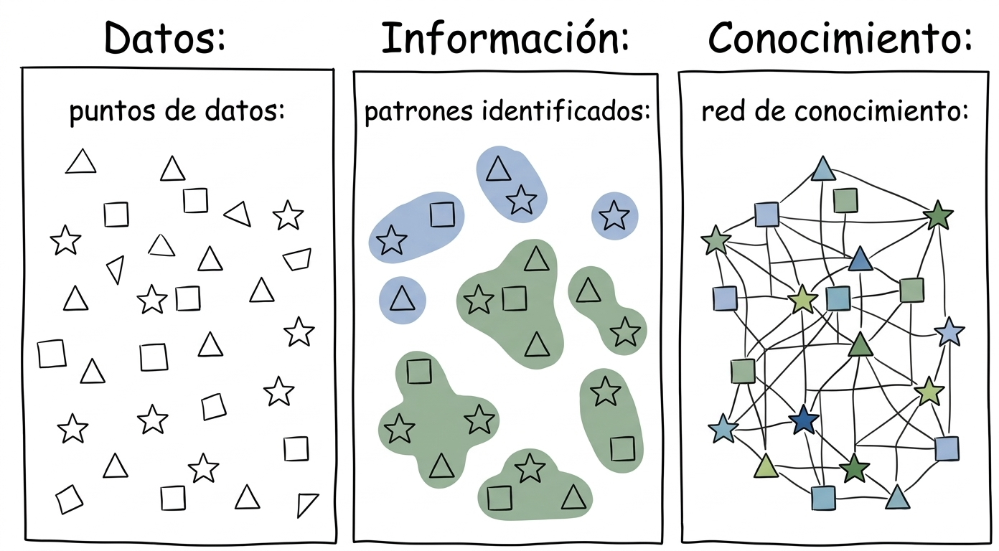
Es como una libreta digital donde guardamos información organizada.
Una base de datos es un lugar donde guardamos mucha información organizada para poder usarla fácilmente.
Un campo es cada una de las columnas de una tabla en una base de datos. Cada campo almacena un tipo específico de información sobre un elemento. Por ejemplo, en una tabla de estudiantes, los campos pueden ser: nombre, edad, dirección o teléfono.
Un registro es cada una de las filas de una tabla en una base de datos. Un registro contiene todos los datos relacionados a un mismo elemento. Por ejemplo, en una tabla de estudiantes, un registro sería toda la información de un estudiante: su nombre, edad, dirección, etc.
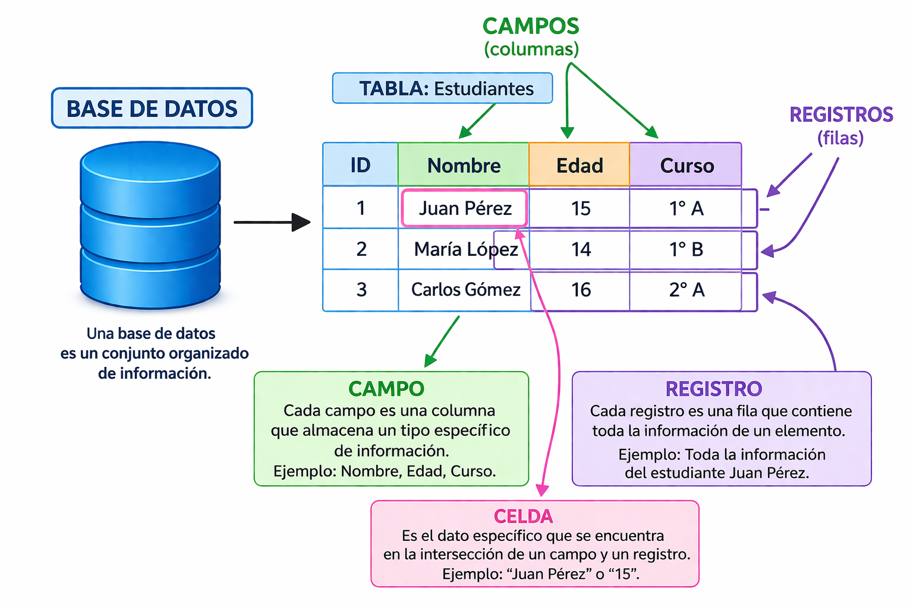
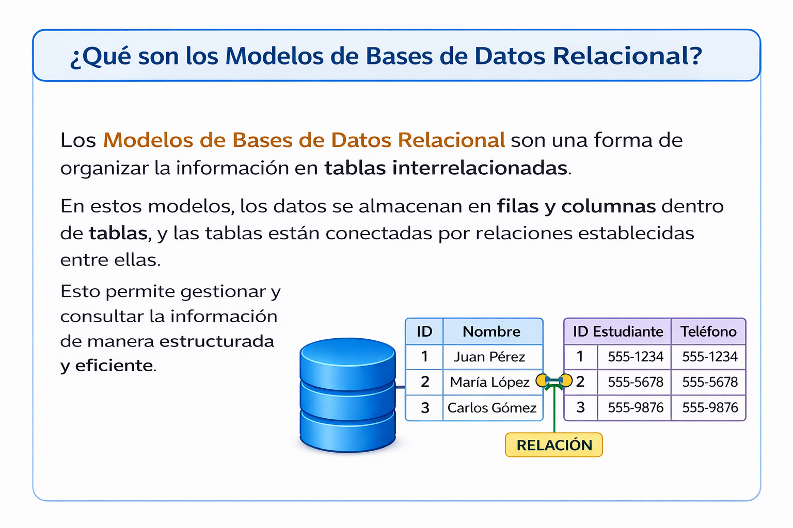
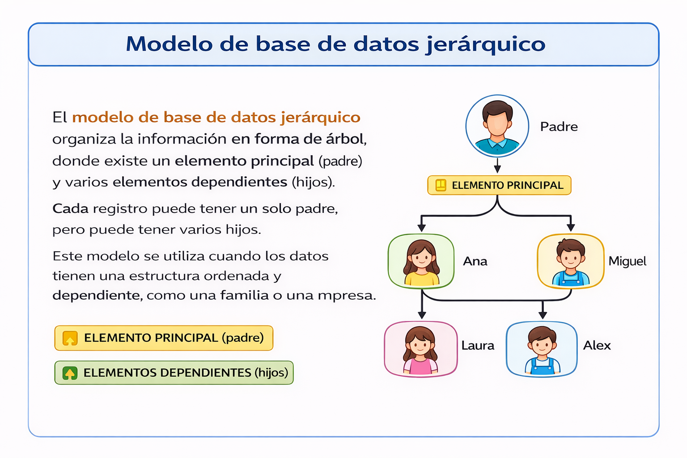
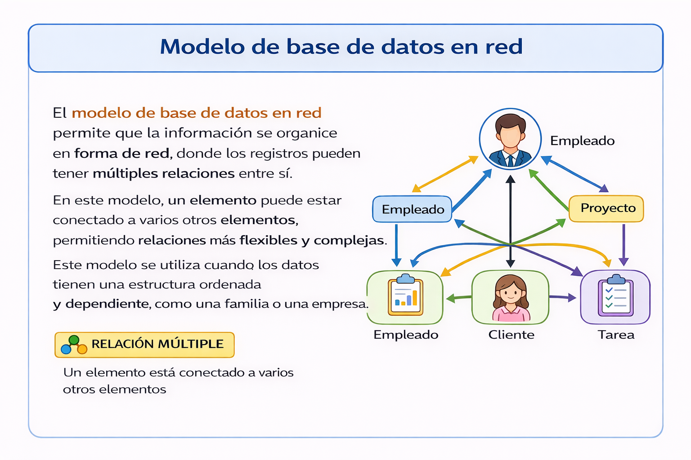
El modelo entidad-relación es una forma de representar la información mediante entidades, atributos y relaciones. Una entidad es un objeto o elemento del mundo real (como un estudiante o un producto), los atributos son sus características (nombre, edad, precio), y las relaciones indican cómo se conectan entre sí. Este modelo se utiliza para diseñar bases de datos de forma visual antes de crearlas, facilitando la organización y comprensión de los datos.
Entidad: algo (Persona).
Atributos: características (nombre, edad).
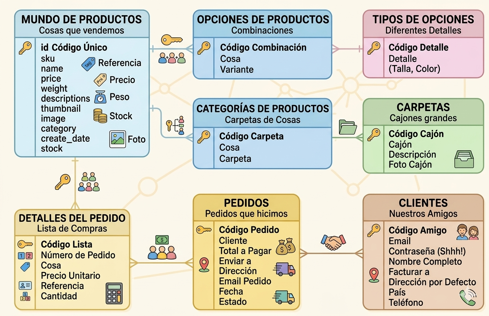
| Cardinalidad | Significado |
|---|---|
| 1 : 1 | Uno con uno |
| 1 : N | Uno con muchos |
| N : M | Muchos con muchos |
| (0,1) | Cero o uno (opcional) |
| (1,1) | Exactamente uno (obligatorio) |
| (0,N) | Cero o muchos |
| (1,N) | Uno o muchos |
SQL significa Structured Query Language (Lenguaje de Consultas Estructuradas). Es un lenguaje que se usa para hablar con las bases de datos. Sirve para guardar, buscar, cambiar y borrar información.
MySQL es un programa que usa SQL para crear y manejar bases de datos. El nombre MySQL combina "My" (nombre) y "SQL". Ayuda a guardar información como nombres, edades o productos de forma ordenada.
SQL es como el idioma que usas para pedir información.
MySQL es el sistema que escucha ese idioma y hace lo que le pides.
XAMPP no es un solo programa, sino un paquete de herramientas que facilita trabajar con páginas web y bases de datos en tu computadora.
XAMPP incluye varios programas, uno de ellos es MySQL.
- SQL: es el lenguaje (lo que escribimos)
- MySQL: es el programa que ejecuta ese lenguaje
- XAMPP: es la herramienta que trae todo listo para usar
XAMPP es como una caja de herramientas.
Dentro de esa caja está MySQL, que es la herramienta que usamos para trabajar con bases de datos.
Un comando es una instrucción que le damos a la computadora para que realice una acción. En SQL, los comandos nos permiten trabajar con bases de datos, como crearlas, usarlas o crear tablas.
🧠 Todos los comandos SQL terminan con punto y coma (;).
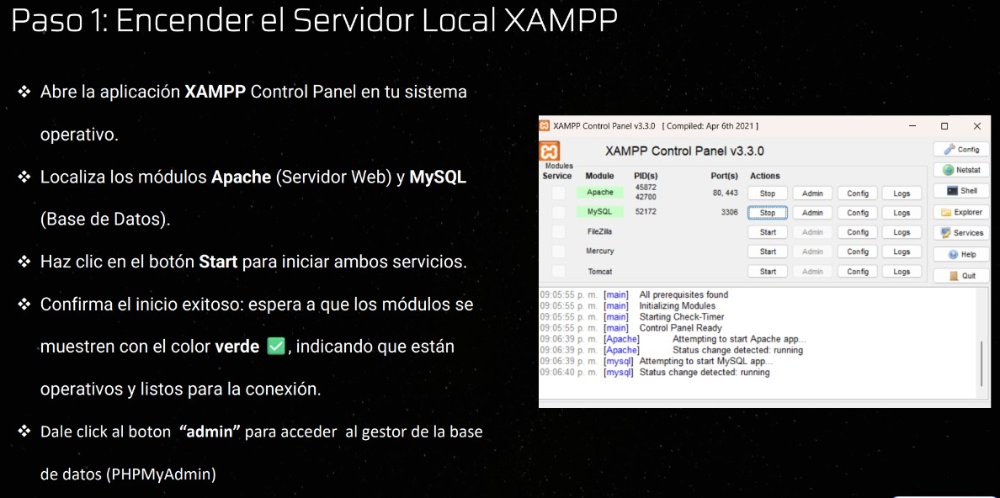
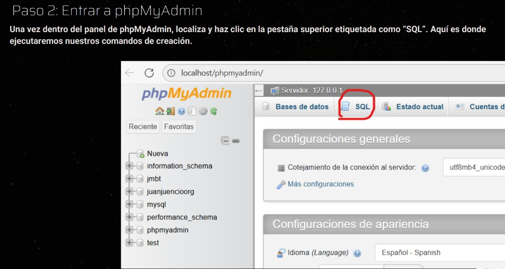
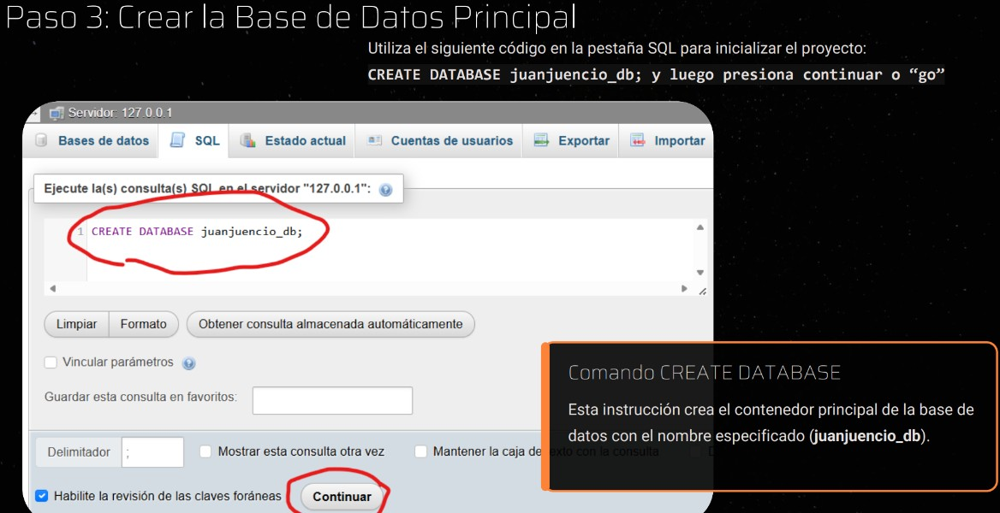
Este comando se utiliza para crear una nueva base de datos donde se almacenará la información.
CREATE DATABASE escuela;
💡 Puedes cambiar el nombre escuela por cualquier otro nombre válido.
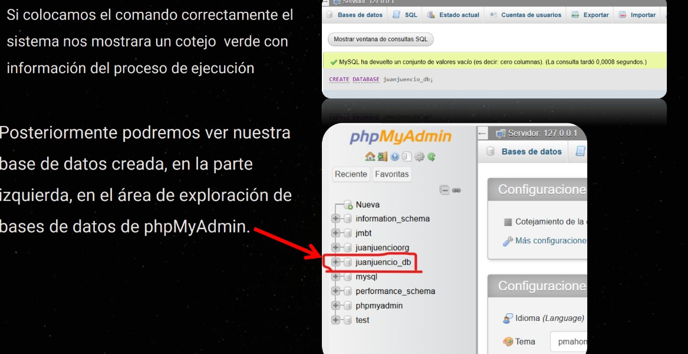
Este comando sirve para seleccionar la base de datos con la que queremos trabajar.
USE escuela;
⚠️ Es importante usar este comando antes de crear tablas, porque le indicamos a la computadora en qué base de datos debe trabajar.
Este comando permite crear una tabla dentro de la base de datos seleccionada. Las tablas son donde se guardan los datos organizados en filas y columnas.
CREATE TABLE estudiantes ( id INT, nombre VARCHAR(50) );
Cada campo se separa con comas y se define con un nombre y un tipo de dato.
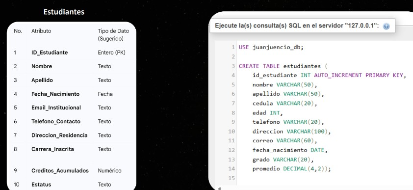